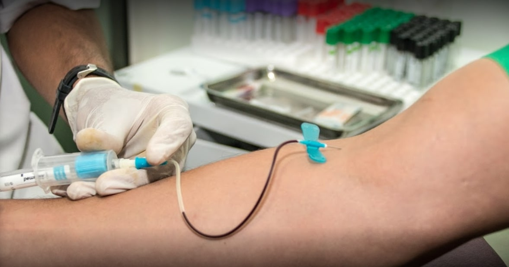
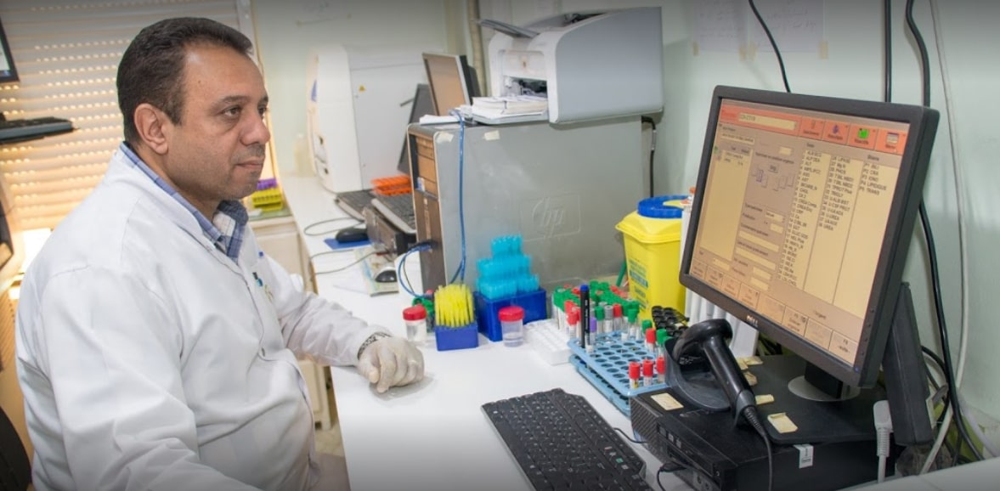
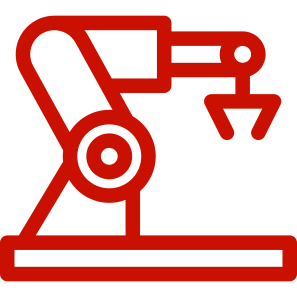
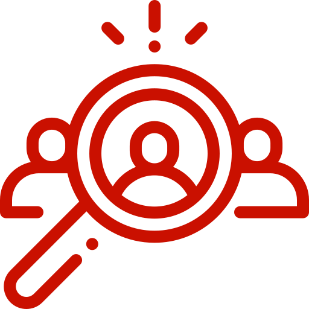

Prélèvement

Vous nous faites confiance pour la réalisation de vos prélèvements et de vos analyses et nous vous en remercions pour cette confiance. Nos équipes qualifiées assurent un prélèvement en toute sérénité.
Le Laboratoire Fès d'Analyses Médicales, créé en 2015, s'appuie sur plus de dix années d'expérience professionnelle dans le secteur medical, ainsi que sur une solide formation théorique de plus d'une décennie.
En constante évolution, il demeure fidèle à sa philosophie et à ses valeurs d'indépendance, d'humanité, de proximité, de performance et d'innovation.

Vous nous faites confiance pour la réalisation de vos prélèvements et de vos analyses et nous vous en remercions pour cette confiance. Nos équipes qualifiées assurent un prélèvement en toute sérénité.

Récupérez vos résultats d'analyses grâce à notre accès sécurisé à notre serveur performant et aussi avec d'autres moyens digitaux. Accès 24h/24, 7j/7.
Le laboratoire Fès vous propose plusieurs moyens pour la prise de rendez-vous : sur le site, par WhatsApp ou appel téléphonique. Flexible et pratique.

Découvrez nos équipements d'analyse dernier cri pour des résultats fiables et rapides.
En savoir +
Rejoignez notre équipe de professionnels passionnés par l'excellence médicale.
ConsulterUne équipe pluridisciplinaire de médecins et biologistes expérimentés à votre service.
En savoir +